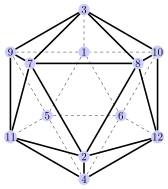
Algoritmos populacionais
Como o nome já diz, algoritmos populacionais lidam com muitas soluções ao mesmo tempo (população), em que a cada iteração os elementos vão sendo melhorados.
Inicialmente uma população de soluções é gerada. Em uma segunda etapa novos elementos são criados e substituídos na população. O processo é repetido até que um critério de parada seja atingido.
Algoritmos populacionais
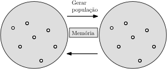
Pode ou não existir um mecanismo de memória que armazena quais novos indivíduos foram adicionados à população em iterações anteriores.
Algoritmos populacionais
Abaixo é mostrado um pseudocódigo de algoritmos populacionais.
Algoritmos populacionais
Como já mencionamos no estudo do algoritmo Simulated Annealing, muitas metaheuristicas são bio-inspiradas, ou seja, buscam na natureza a idéia geral para o seu design. Com as metaheuristicas populacionais essa bio-inspiração é mais acentuada. Alguns exemplos de fenômenos naturais que inspiraram metaheuristicas:
- O movimento de pulo dos sapos
- A refração da luz
- Músicos improvisando jazz (harmony search)
- Evolução das espécies
- Colônia de formigas
- Movimento de morcegos, pássaros, moscas
- Movimento dos planetas
- Colonização de impérios...
Algoritmos populacionais
Existe uma “onda” na comunidade de otimização que tende para a criação de muitas “novas” metaheuristicas bio-inspiradas. Muitas delas não passam de casos específicos de outros métodos já desenvolvidos, porém com uma roupagem de novidade. Essa tendência é extremamente prejudicial para a área, portanto tome cuidado com esses novos e inovadores métodos.
Para uma ótima reflexão sobre o problema, ler os artigos:
- 2012 - Metaheuristics - the metaphor exposed - Kenneth Sorensen
- 2022 - Exposing the greywolf moth flame whale firefly bat and antlion algorithms six misleading optimization techniques inspired by bestial metaphors - Camacho
Algoritmos populacionais
Existe uma “onda” na comunidade de otimização que tende para a criação de muitas “novas” metaheuristicas bio-inspiradas. Muitas delas não passam de casos específicos de outros métodos já desenvolvidos, porém com uma roupagem de novidade. Essa tendência é extremamente prejudicial para a área, portanto tome cuidado com esses novos e inovadores métodos.
E para entender a dimensão do problema...não ler os artigos:
- 2017 - Sperm motility algorithm a novel metaheuristic approach for global optimisation - raouf
- 2020 - Tiki-taka algorithm a novel metaheuristic inspired by football playing style - Mohd
- 2023 - Perfectionism Search Algorithm (PSA) An Efficient Meta-Heuristic - Amin
Algoritmos populacionais
Os duas inspirações que estão destacadas na lista abaixo podem ser consideradas como verdadeiras inovações, que de fato geraram algoritmos novos e com conceitos que agregaram para o avanço da pesquisa na área.
- O movimento de pulo dos sapos
- A refração da luz
- Músicos improvisando jazz (harmony search)
- Evolução das espécies
- Colônia de formigas
- Movimento de morcegos, pássaros, moscas
- Movimento dos planetas
- Colonização de impérios...
Algoritmos populacionais
Nós estudaremos os algoritmos inspirados na evolução das espécies.
- O movimento de pulo dos sapos
- A refração da luz
- Músicos improvisando jazz (harmony search)
- Evolução das espécies
- Colônia de formigas
- Movimento de morcegos, pássaros, moscas
- Movimento dos planetas
- Colonização de impérios...
Algoritmos evolucionários
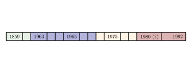
Vejamos uma linha do tempo dos algoritmos inspirados na evolução das espécies, hoje chamados de algoritmos evolucionários.
Algoritmos evolucionários
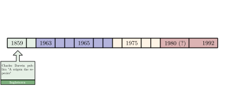
A grande inspiração para todos os algoritmos foi a revolucionária teoria de Darwin sobre como as espécies evoluem ao longo do tempo.
Algoritmos evolucionários
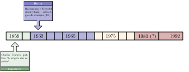
Em Berlin, Rachenberg e Schwefel desenvolvem um modelo de algoritmos chamados estrategias de evolução (EE).
Algoritmos evolucionários
Esses algoritmos foram usados para resolver problemas de mecânica dos fluidos, especificamente em túneis de vento para a otimização de placas que minimizam a resistência ao vento.
Algoritmos evolucionários
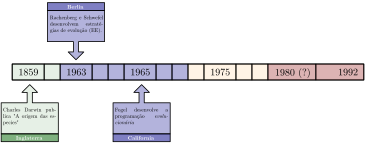
Na Califórnia, Fogel desenvolve a estrutura evolucionária chamada programação evolucionária (PE), usado em máquinas de estado finitos com o objetivo de gerar inteligência artificial.
Algoritmos evolucionários
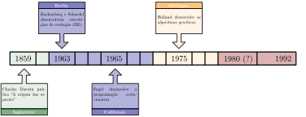
Em Michigan, Holland publica seu livro sobre algoritmos genéticos (AG).
Algoritmos evolucionários
Originalmente os AG não foram usados em problemas de otimização, mas sim na determinação de um número ideal de observações das variáveis aleatórias.
Algoritmos evolucionários
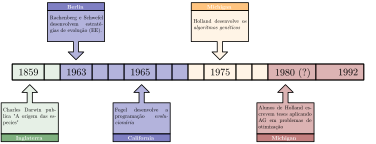
Por sorte, seus alunos de doutorado começaram a usar seu método para resolver problemas de otimização.
Algoritmos evolucionários
Até esse momento as pesquisas eram realizadas de forma quase que independente, com pouca interação entre os grupos de pesquisa.
Algoritmos evolucionários
No fim da década 80 os pesquisadores começaram a se encontrar em congressos e a trocar conhecimentos.
Algoritmos evolucionários
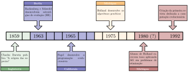
Em 1992 a área é consolidada com o termo computação evolucionária, e a primeira revista sobre o tema é criada, chamada Evolutionary Computing.
Algoritmos evolucionários
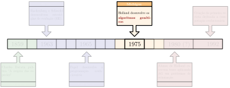
Nós estudaremos justamente os algoritmos genéticos de Holland e seus alunos.
Algoritmos genéticos
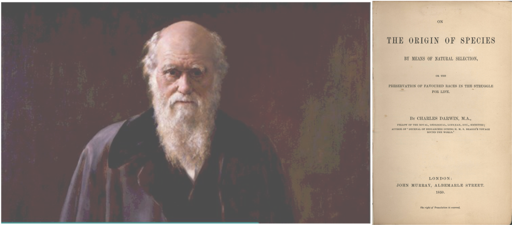
Para isso, precisamos primeiro entender a dinâmica básica da teoria da evolução de Charles Darwin.
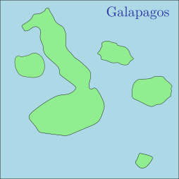
É sabido que Darwin fez diversas incursões pelo mundo a bordo do Beagle, e nessas incursões ele estudava fauna e flora dos locais, com anotações e desenhos. Um dos lugares que ele visitou foi Galápagos e suas diversas ilhas.
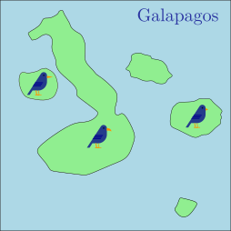
Em Galápagos, Darwin reparou que em diversas ilhas existiam espécies de pássaros muito similares entre si. A única diferença notável era no formato de seus bicos.
Algoritmos genéticos
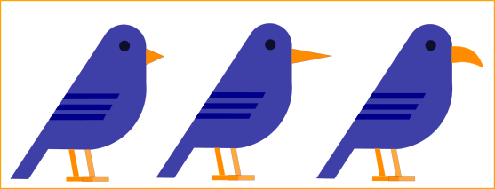
Os pássaros de cada ilha aparentavam ter um tipo de bico próprio para coletar alimentos específicos daquela ilha.
Algoritmos genéticos
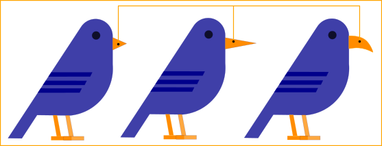
Darwin reparou que apesar de possuírem bicos diferentes...
Algoritmos genéticos
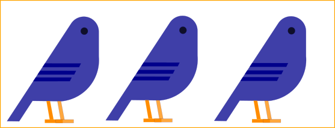
Os pássaros eram muito semelhantes entre si!
Algoritmos genéticos
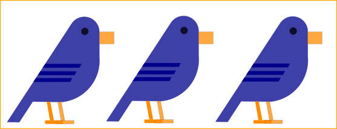
E isso o fez pensar em uma conjectura: Será que todos os pássaros vieram de um ancestral comum?
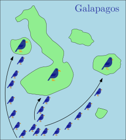
Para sustentar a conjectura, Darwin teria que explicar como um mesmo tipo de pássaro teria migrado para as ilhas, e ao longo do tempo se diferenciado.
A explicação para a conjectura de Darwin é conhecida como a Teoria da Seleção Natural (ou evolução das espécies).
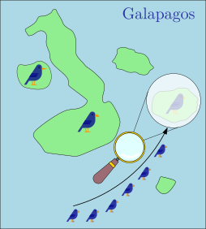
Vejamos qual é a dinâmica da Teoria da Seleção Natural, em uma das ilhas de Galápagos.
Algoritmos genéticos
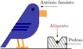
Suponha que a ilha é muito pedregosa, de forma que o alimento do pássaro Antônio (que está faminto) cai e se posiciona como na Figura acima.
Algoritmos genéticos
Podemos afirmar por mera observação, que o pássaro Antônio não está muito Apto ou Adaptado para se alimentar nesta ilha.
Algoritmos genéticos
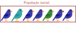
Inicialmente uma população desses ancestrais chegou a ilha. Note que embora a maioria tenha o bico característico, devido à mutação pode existir uma pequena parte com variações.
Algoritmos genéticos
Embora eles sejam do mesmo tipo, cada um possui características diferentes além do bico, nesse caso as cores e/ou tamanhos.
Algoritmos genéticos
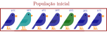
Cada uma das características ajuda na adaptabilidade do individuo ao ambiente. Vamos chamar essa pontuação de fitness do indivíduo.
Algoritmos genéticos
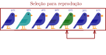
Com o tempo os indivíduos da população se reproduzem. Como ocorre com os seres humanos, existe uma competição para a reprodução.
Algoritmos genéticos
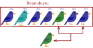
E a reprodução gera novos indivíduos para a população.
Algoritmos genéticos
Existe uma probabilidade pequena de ocorrer uma mutação nesses novos indivíduos (como o albinismo ou nanismo em seres humanos).
Algoritmos genéticos
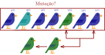
Essa mutação altera alguma característica do indivíduo.
Algoritmos genéticos
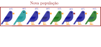
Com esse novo indivíduo temos uma nova população (1 individuo maior do que a população inicial.)
Algoritmos genéticos
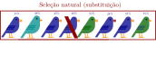
Os indivíduos menos aptos (com menor fitness) são mais propensos a morrer (porém existe pequena chance de sobreviverem).
Algoritmos genéticos
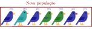
E assim uma nova população repete o mesmo ciclo.

O ciclo completo é mostrado ao lado. Consiste nas etapas:
- Geração da pop. inicial
- Reprodução
- Mutação
- Seleção natural
Algoritmos genéticos
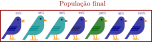
Segundo Darwin, após um intervalo de tempo suficiente, com muita mutação e seleção natural, a população se torna a mais apta para habitar naquele ambiente (com as características de comida que vimos). Nesse caso a característica predominante seria o formato do bico.
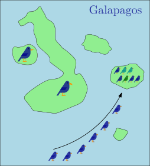
E assim se explicaria a conjectura de Darwin de como todos os pássaros de todas as ilhas possuíam um ancestral comum.
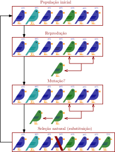
MAS O QUE ISSO TÊM A VER COM ALGORITMOS DE OTIMIZAÇÃO?
Podemos interpretar a teoria da seleção natural de Darwin como um mecanismo de maximização da adaptabilidade (fitness) dos indivíduos de uma população.
Essa ideia então pode ser usada em problemas de otimização, e é a partir dela que surgem os algoritmos genéticos de Holland.
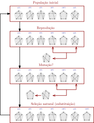
Considere a Figura ao lado como sendo as etapas de um algoritmo genético para o problema do caixeiro viajante. Temos as seguintes associações com a teoria de Darwin:
- Individuo da população \(\rightarrow\) solução do TSP.
- Fitness \(\rightarrow\) medida de valoração da solução (pode ser a fo).
- Reprodução \(\rightarrow\) método para selecionar e combinar duas soluções.
- Mutação \(\rightarrow\) pequena alteração na solução.
- Seleção natural \(\rightarrow\) como excluir soluções ruins da população.
Algoritmos populacionais
Sempre precisamos entender como os algoritmos de otimização se comportam no fitness landscape, pois de forma geral é isso que determina o design do método.
Não se esqueça que o fitness landscape é um conceito vinculado à vizinhança. É errado pensarmos em fitness landscape em algoritmos genéticos, pois não usamos vizinhança alguma! Vamos supor que o fitness landscape não seja ligado por um operador de movimento (vizinhança), mas sim como uma representação de todas as soluções possíveis para o problema (só para entendermos a convergência dos AG).
Algoritmos populacionais
Os algoritmos evolucionários (genéticos inclusos), começam com um população de indivíduos bem separados, e ao longo das iterações as soluções convergem para ótimos locais ou globais (ot. local/global também está ligado ao conceito de vizinhança...).
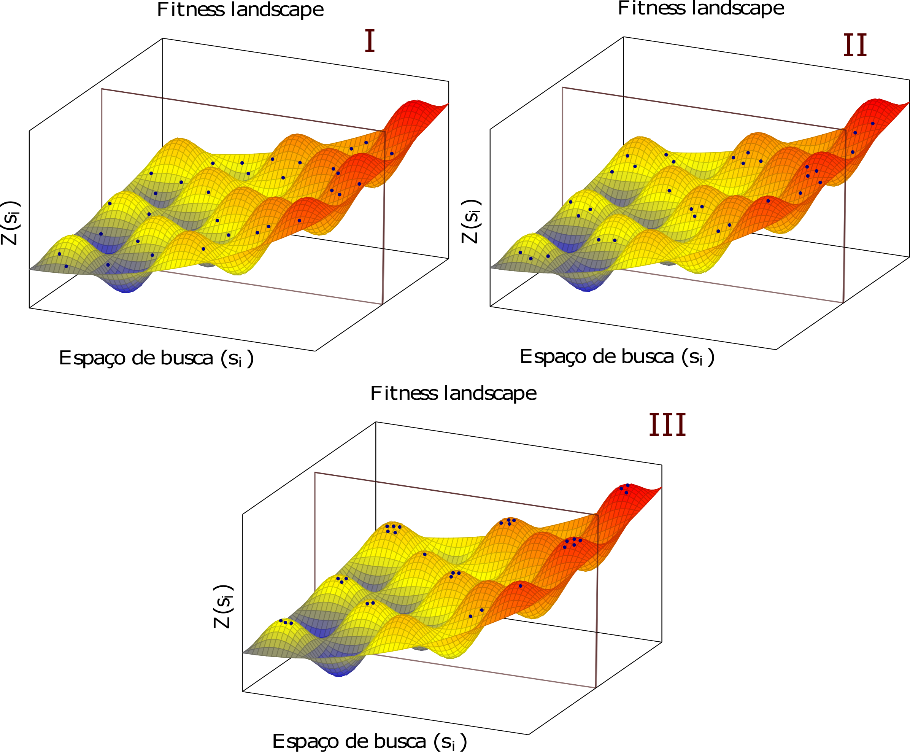
Algoritmos genéticos
Abaixo é mostrado um pseudocódigo de algoritmos genéticos e evolucionários.
Algoritmos genéticos
Dessa forma, temos que os principais componentes no design de um algoritmo genético são os seguintes:
- Geração da população inicial: Como a primeira geração de soluções será criada?
- Avaliação: Como será calculado o fitness de uma solução?
- Seleção: Qual é o critério usado para selecionar os indivíduos que vão se reproduzir?
- Reprodução/mutação: Como combinar duas (ou mais) soluções para gerar novas?
- Substituição: Qual critério utilizar para remover soluções da população?
Algoritmos genéticos
Dessa forma, temos que os principais componentes no design de um algoritmo genético são os seguintes:
- Geração da população inicial: Como a primeira geração de soluções será criada?
- Avaliação: Como será calculado o fitness de uma solução?
- Seleção: Qual é o critério usado para selecionar os indivíduos que vão se reproduzir?
- Reprodução/mutação: Como combinar duas (ou mais) soluções para gerar novas?
- Substituição: Qual critério utilizar para remover soluções da população?
Algoritmos genéticos
Devido a grande variabilidade que pode existir na população inicial, algoritmos populacionais focam mais na exploração do que na intensificação do fitness landscape.
O aspecto mais importante na definição da pop. inicial é a diversificação. Se a população é muito próxima (ou seja, são soluções parecidas), uma convergência prematura pode ocorrer.
Algumas formas de inicialização são mostradas abaixo:
Algoritmos genéticos
Design
Os indivíduos são gerados aleatóriamente
Cria-se soluções de forma sequencial, de forma que a sol \(i+1\) está sempre a uma distância \(\delta\) da solução \(i\).
Usa-se uma heurística que possibilite gerar diversas soluções, por exemplo a heurística do vizinho mais próximo do TSP com diversos pontos iniciais.
Uma parte das soluções é gerada de forma aleatória e outra de forma heurística.
Algoritmos genéticos
Dessa forma, temos que os principais componentes no design de um algoritmo genético são os seguintes:
- Geração da população inicial: Como a primeira geração de soluções será criada?
- Avaliação: Como será calculado o fitness de uma solução?
- Seleção: Qual é o critério usado para selecionar os indivíduos que vão se reproduzir?
- Reprodução/mutação: Como combinar duas (ou mais) soluções para gerar novas?
- Substituição: Qual critério utilizar para remover soluções da população?
Algoritmos genéticos
A avaliação da qualidade de uma solução em algoritmos genéticos é usualmente feita pela função fitness. Essa medida deve ser do tipo “maior melhor”, considerando os métodos de seleção de indivíduos.
A função fitness não precisa necessáriamente ser igual ao valor da função objetivo! Por exemplo, sabemos que uma população diversificada é importante, de forma que é possível embutir um “bônus” no fitness para as soluções que são mais diferentes da população, dessa forma mesmo que elas tenham uma fo ruim, esse aspecto pode ser compensado por outras características gerando um fitness mais alto.
Algoritmos genéticos
Ainda, se ela precisa ser do tipo “maior melhor”, como gerar o fitness de soluções de problemas de minimização (em que a fo menor é melhor)?
Nesses casos podemos transformar a fo da seguinte forma:
- Primeiro calcular \(b_i = \dfrac{1}{z(x_i)}\) (o inverso da fo de toda solução).
- Em seguida padronizar todos os valores dividindo pela soma: \(f_i = \dfrac{b_i}{\sum_{0}^{n} b_i}\)
Algoritmos genéticos
Dessa forma, temos que os principais componentes no design de um algoritmo genético são os seguintes:
- Geração da população inicial: Como a primeira geração de soluções será criada?
- Avaliação: Como será calculado o fitness de uma solução?
- Seleção: Qual é o critério usado para selecionar os indivíduos que vão se reproduzir?
- Reprodução/mutação: Como combinar duas (ou mais) soluções para gerar novas?
- Substituição: Qual critério utilizar para remover soluções da população?
Algoritmos genéticos
A etapa de seleção visa escolher quais indivíduos da população serão usados como pais, tendo seus materiais genéticos (partes da solução) mescladas de forma a gerar novos indivíduos. A idéia da seleção é que indivíduos com um alto fitness possuem componentes em sua estrutura que melhoram a função objetivo, e talvez mesclando esses indivíduos combine seus pontos fortes, criando soluções melhores.
PERGUNTA: Se queremos mesclar “bons” indivíduos, por que simplesmente não selecionamos aqueles com os maiores valores de fitness para a reprodução?
RESPOSTA: Essa estratégia pode levar a uma convergência prematura para ótimos locais, e ainda existe o fator de diversificação: pode ser que embora uma solução tenha um fitness ruim, uma pequena parte dela faz parte do ótimo!
Algoritmos genéticos
Embora soluções com baixo fitness não sejam boas, é uma boa prática manter elas na lista de possíveis seleções, porém com uma baixa probabilidade. Assim, os métodos mais comuns de seleção trabalham com essa ideia: todos podem ser selecionados, porém com probabilidades diferentes, e que refletem o seu fitness (quanto maior o fitness maior a chance de ser escolhido para reprodução).
Os três métodos mais comuns para seleção são:
- Roleta (Roulette Wheel Selection)
- Amostragem Estocástica Universal (Stochastic Universal Sampling)
- Torneio (Tournament selection)
Algoritmos genéticos
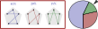
No método da roleta atribuímos uma probabilidade de seleção a cada indivíduo que é proporcional ao seu fitness como em um gráfico de pizza. Em seguida atribuímos um marcador na roleta e a “rolamos”, o indivíduo selecionado pelo marcador é usado na reprodução.
Algoritmos genéticos
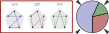
Ja no método da Amostragem Estocástica Universal, a roleta é girada uma única vez para todos os indivíduos, porém existe um número n de marcadores equidistantes na roleta, um para cada indivíduo que irá participar da reprodução.
Algoritmos genéticos
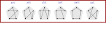
No método do Torneio, começamos com todos os indivíduos da população
Algoritmos genéticos
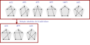
Em seguida k indivíduos são selecionados aleatóriamente dentre a população (cada um com a mesma probabilidade).
Algoritmos genéticos
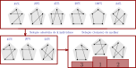
Dentre esses indivíduos o torneio é realizado: o indivíduo com maior fitness é selecionado para reproduzir. O método é executado uma vez para cada indivíduo que for reproduzir.
Algoritmos genéticos
Dessa forma, temos que os principais componentes no design de um algoritmo genético são os seguintes:
- Geração da população inicial: Como a primeira geração de soluções será criada?
- Avaliação: Como será calculado o fitness de uma solução?
- Seleção: Qual é o critério usado para selecionar os indivíduos que vão se reproduzir?
- Reprodução/mutação: Como combinar duas (ou mais) soluções para gerar novas?
- Substituição: Qual critério utilizar para remover soluções da população?
Algoritmos genéticos
A etapa da reprodução tem por objetivo mesclar boas partes das soluções dos pais e transmitir para os filhos. Essa etapa é muito dependente das estruturas de dados usadas para a representação das soluções, factibilidade, etc...(como as vizinhanças). De forma que cada problema possui métodos específicos para reprodução.
Veremos 2 métodos muito utilizados para a reprodução de soluções do TSP, são elas:
- Crossover Parcialmente Mapeado (Partially Mapped Crossover - PMX)
- Crossover Ordenado (Ordered Crossover - OX)
No PMX a combinação é feita com 2 pais (parents \(p_1\) e \(p_2\)) gerando 2 filhos (offsprings \(o_1\) e \(o_2\)).
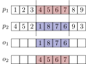
Dois pontos de corte aleatório são determinados para ambos os pais. Em seguida, os elementos entre os pontos de \(p_1\) são alocados em \(o_2\) e os elementos entre os pontos de \(p_2\) são alocados em \(o_1\).
Para todos os elementos restantes (tanto de \(o_1\) quanto de \(o_2\)), segue-se a ordem dos pais que não geraram seus interiores, alocando nas mesmas posições os valores que ainda não foram alocados. Os outros ficam ainda vagos.
Para alocar os elementos faltantes, um mapeamento é feito entre os elementos internos aos pontos dos pais.
Esse mapeamento é usado no preenchimento dos pontos faltantes.
O método OX começa da mesma forma do PMX, selecionando pontos de corte e copiando os elementos internos aos 2 filhos.
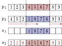
Para o preenchimento dos elementos faltantes, segue-se a ordem dos pais (não o que gerou a parte interna), não adicionando os elementos já adicionados, porém continuando na busca pelos que ainda não foram.
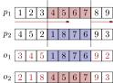
Essa busca continua “dando a volta” na solução, até que todos os elementos do filho estejam preenchidos.
Algoritmos genéticos
A mutação é um operador unário (afeta uma solução), e tem por objetivo realizar pequenas alterações no indivíduo. Conforme as gerações vão passando, a tendencia é que os indivíduos fiquem mais parecidos devido à convergência. A mutação tem o objetivo de dar uma pequena pivotada nesse processo, para evitar uma convergência prematura, e ainda aumentar o fator de exploração.
Como a reprodução, a mutação é um processo específico para cada problema, porém é padrão que deve existir uma probabilidade de mutação \(p_m\) para cada individuo gerado, estudo sugerem que essa probabilidade deve estar no intervalo \(p_m \in [0.001,0.01]\) (obviamente isso não é uma regra.)
É possível usar as próprias estruturas de vizinhança do problema para gerar a mutação. Para o TSP, por exemplo, podemos fazer o swap de k elementos de uma rota, com \(k<<n\).
Algoritmos genéticos
Dessa forma, temos que os principais componentes no design de um algoritmo genético são os seguintes:
- Geração da população inicial: Como a primeira geração de soluções será criada?
- Avaliação: Como será calculado o fitness de uma solução?
- Seleção: Qual é o critério usado para selecionar os indivíduos que vão se reproduzir?
- Reprodução/mutação: Como combinar duas (ou mais) soluções para gerar novas?
- Substituição: Qual critério utilizar para remover soluções da população?
Algoritmos genéticos
Após a geração dos novos indivíduos, a população é aumentada. Ao longo do algoritmo a mesma deve ter um tamanho fixo, de forma que alguns indivíduos devem ser selecionados para serem removidos. Essa etapa é chamada substituição. Novamente podemos nos perguntar:
PERGUNTA: Se queremos manter “bons” indivíduos, por que não eliminar os k piores?
E a resposta é a mesma...
RESPOSTA: Essa estratégia pode levar a uma convergência prematura para ótimos locais, e ainda existe o fator de diversificação: pode ser que embora uma solução tenha um fitness ruim, uma pequena parte dela faz parte do ótimo!
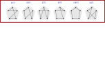
Uma forma de resolver esse problema é dando uma margem para selecionarmos indivíduos melhores para serem eliminados
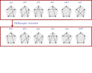
Basta ordenarmos os elementos de forma crescente em relação ao seu fitness.
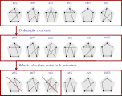
Em seguida selecionamos aleatoriamente o número que deve ser eliminado \(m\) dentre os \(k\) primeiros elementos, com \(m < k\). No exemplo ao lado temos \(m\) = 2 e \(k\) = 3.
AG e Estruturas de Dados
Lembrando da aula de representação de soluções: existe algum tipo de estrutura de dados e/ ou representação de soluções que facilita a implementação de algoritmos genéticos?
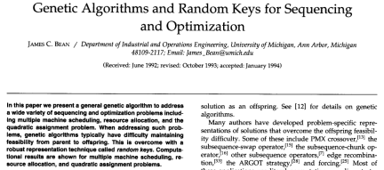
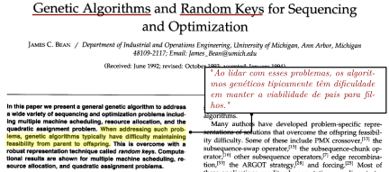
AG e Estruturas de Dados
As chaves aleatórias foram criadas com o intuito de serem utilizadas em algoritmos genéticos! Usando-as, todas as operações de cruzamentos são executadas no espaço indireto. Só retomamos a solução quando a decodificamos - ou seja, já fazemos a decodificação para a factibilidade.
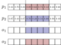
Podemos executar o mesmo PMX que anteriormente.
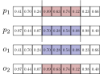
No entanto, nenhuma correção é necessária agora! Podemos simplesmente realizar a troca de materiais genéticos e em seguida fazer a decodificação dos filhos gerados.
AG e Estruturas de Dados
Note que com as random keys, o algoritmo genético se torna independente do problema a ser resolvido - todo o algoritmo é aplicado no espaço das chaves aleatórias. A única parcela que depende do problema é a decodificação. Vejamos o fluxograma de um algoritmo genético que usa RK.

A única parte que é específica do problema é a decodificação da solução.
AG e Estruturas de Dados
Ou seja, se você conseguir pensar em uma codificação por random keys para o seu problema, é possível usar pacotes de algoritmos genéticos prontos, em que a única coisa que é necessário implementar é o decodificador, para extrair o custo de uma chave aleatória. Uma versão desses AGs que está sendo muito usada é o BRKGA (Biased Random Keys Genetic Algorithms) - com códigos prontos em Python e C++.
Pacotes BRKGA
Pacotes prontos Python e C++ BRKGA:
Artigo BRKGA
Artigo de revisão sobre BRKGA:
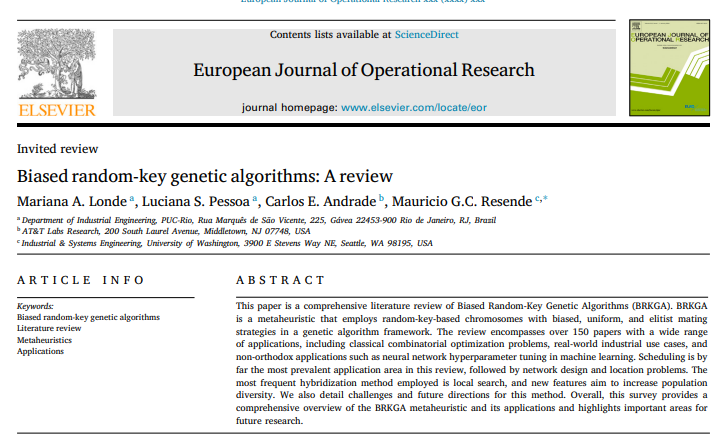
Exemplo - TSP
- EXEMPLO: Implemente um AG para o problema do TSP com as seguintes características:
- Geração da população inicial: aleatória.
- Seleção: Roleta
- Cruzamento: OX (Order Crossover)
- Mutação: swap aleatório
Atividade 1
Considerando o problema que você escolheu para tratar na disciplina.
- Encontre um artigo que o resolve usando AG.
- Descreva os como os autores resolvem os principais componentes do design para o algoritmo.